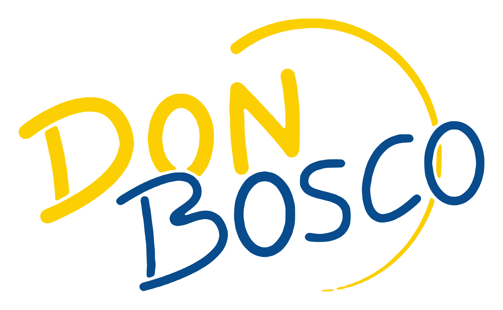

Mercoledì
21/10
Ginnastica presciistica
Orario
ore 19:30
· lezioni di un'ora
Dove
Palestra Way Assauto, Asti
Quando
ogni mercoledì
fino al 13 gennaio
escluso il periodo di Natale
Per chi
soci tesserati e assicurati
Iscrizioni in negozio o via mail
sciclubdonboscoasti@gmail.com
SCI CLUB DON BOSCO